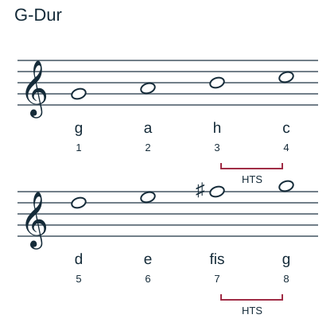
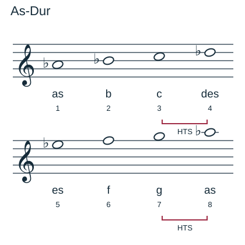
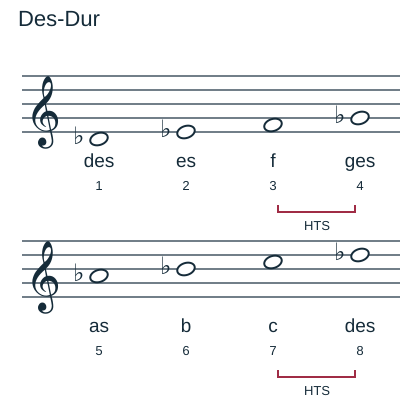
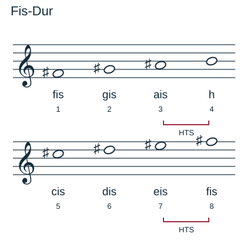

Durtonleitern bauen
Mit einem KI-Tutor lernen
Ein KI-Tutor erklärt dir diese Seite und hilft dir bei den Übungen. Wähl deinen Assistenten:
Mit Claude öffnen Mit ChatGPT öffnen Mit Mistral Vibe öffnen
Du nutzt dein eigenes Konto beim Anbieter. Der Assistent ist kein Angebot von lernapps.net: lernapps liefert nur Inhalte und Übungen. Die Wahl gilt für alle Seiten, nur auf diesem Gerät.
Der Schrittplan für Dur
- Durtonleiter
Eine Tonleiter mit der Schrittfolge Ganz – Ganz – Halb – Ganz – Ganz – Ganz – Halb.
Merke
Die Halbtonschritte liegen bei Dur zwischen 3–4 und 7–8. Stufe 8 ist der Grundton eine Oktave höher.
Beginne beim Grundton und schreibe die Stammtonbuchstaben der Reihe nach. Prüfe dann jeden Abstand mit dem Schrittplan und setze die nötigen Vorzeichen. Ein Buchstabe darf innerhalb der sieben Stufen nicht zweimal vorkommen.
Tonleiter-Baukasten
Aufgabe Nr. 1
Aufgabe Nr. 1
Baue G-Dur aufsteigend. Wähle für jede Stufe den passenden Ton.
Lösung
g – a – h – c – d – e – fis – g
G-Dur und As-Dur
G-Dur: g – a – h – c – d – e – fis – g. Ohne Kreuz wäre e–f zu klein und f–g zu groß. Mit fis stimmen beide Abstände.

Die Zahlen zählen die Tonstufen; HTS markiert die Halbtonschritte. Vorzeichen stehen hier einzeln vor den betroffenen Noten.
Quelle: eigene Zeichnung. Lizenz: CC-BY-4.0.As-Dur: as – b – c – des – es – f – g – as. Die kleinen Schritte sind c–des und g–as.

Die Zahlen zählen die Tonstufen; HTS markiert die Halbtonschritte. Vorzeichen stehen hier einzeln vor den betroffenen Noten.
Quelle: eigene Zeichnung. Lizenz: CC-BY-4.0.Zwei weitere Beispiele
Des-Dur: des – es – f – ges – as – b – c – des. Fis-Dur: fis – gis – ais – h – cis – dis – eis – fis. Eis klingt wie f, heißt hier aber eis, weil die Stufen nacheinander verschiedene Stammtonbuchstaben brauchen.

Die Zahlen zählen die Tonstufen; HTS markiert die Halbtonschritte. Vorzeichen stehen hier einzeln vor den betroffenen Noten.
Quelle: eigene Zeichnung. Lizenz: CC-BY-4.0.
Die Zahlen zählen die Tonstufen; HTS markiert die Halbtonschritte. Vorzeichen stehen hier einzeln vor den betroffenen Noten.
Quelle: eigene Zeichnung. Lizenz: CC-BY-4.0.Übung
Übung
Drei Beispielaufgaben, jede mit ihrer Lösung:
Aufgabe Nr. 1
As-Dur: Wie viele Halbtonschritte liegen zwischen Stufe 2 (b) und Stufe 3 (c)? Antworte mit 1 oder 2.
Tipp
Dur: Halbtonschritte bei 3–4 und 7–8.
Lösung
- Zwischen b und c liegen 2 Halbtonschritte.
Richtige Antwort: 2
Aufgabe Nr. 2
G-Dur: Wie viele Halbtonschritte liegen zwischen Stufe 6 (e) und Stufe 7 (fis)? Antworte mit 1 oder 2.
Tipp
Dur: Halbtonschritte bei 3–4 und 7–8.
Lösung
- Zwischen e und fis liegen 2 Halbtonschritte.
Richtige Antwort: 2
Aufgabe Nr. 3
As-Dur: Wie viele Halbtonschritte liegen zwischen Stufe 6 (f) und Stufe 7 (g)? Antworte mit 1 oder 2.
Tipp
Dur: Halbtonschritte bei 3–4 und 7–8.
Lösung
- Zwischen f und g liegen 2 Halbtonschritte.
Richtige Antwort: 2
Übung
Lösung
Richtige Antwort: 1. g unten, 2. a, 3. h, 4. c, 5. d, 6. e, 7. fis, 8. g oben
G-Dur braucht fis. Die Halbtonschritte h–c und fis–g liegen an 3–4 und 7–8.
Mehr dazu:
Übung
Lösung
des richtige Antwort
c–des ist der benötigte Halbtonschritt von Stufe 3 nach 4.
d
c–d ist ein Ganzton. An dieser Stelle braucht Dur einen Halbton.
cis
Cis klingt wie des, wiederholt hier aber den Stammtonbuchstaben c statt der nötigen vierten Stufe d.
Die Stammtonfolge a–h–c–d verlangt an vierter Stelle eine Form von d: des.
Mehr dazu:
Übung
Lösung
Richtige Antwort: Stufe 2–3 – Ganztonschritt; Stufe 3–4 – Halbtonschritt; Stufe 1–8 – Oktave
Dur hat Halbtonschritte an 3–4 und 7–8; alle übrigen benachbarten Stufen sind Ganztöne.
Mehr dazu:
Offene Aufgabe
Schreibe As-Dur aufsteigend ins Heft, vom as bis zum nächsten as. Beschrifte die Notennamen und markiere die Halbtonschritte.
Eine gute Antwort enthält:
Lösung
As-Dur: as – b – c – des – es – f – g – as. Markiere c–des (3–4) und g–as (7–8). Vergleiche die Lage der Notenköpfe mit der Abbildung; eine andere vollständige Oktavlage ist ebenfalls möglich.